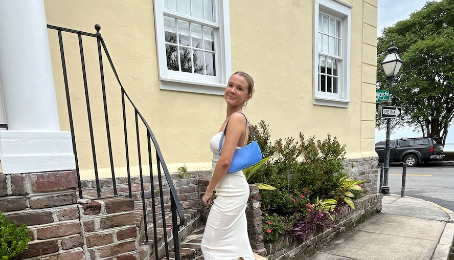

Learn More About Who I Am:
I am a 19 year old girl from Ridgefield, CT and I am currently enrolled as a sophomore at Elon Univeristy.

Fun Facts:
1. My friends describe me as driven, outgoing, intelligent, witty, and loyal
2. I have a big family - my parents, my three sisters, and my two dogs.
3. One of my favorite poems is Still I Rise by Maya Angelou.
Hobbies
I enjoy reading, writing, running, swimming, drawing, and working out. Generally speaking, I enjoy my alone time and my own company while doing any of these hobbies. I really enjoy all of these things, but I want to keep finding more hobbies because I really like developing new skills.
Skills To Offer In the Workplace
In a workplace I can offer a variety of different skills that I have dedicated alot of time to in order to fully devlop them.
Writing:
I am an English major and so I have had a lot of practice in both writing poetry aswell as fiction/non-ficiton stories. While I am able to write my own pieces I am also able to edit other people's pieces of writing due to experience in extensive peer review.
Cinema:
I took a class my freshman year that focused on editing short film scripts and I am currently working on my own documentary that is about male student athlete's mental health - it is a long process that requires dedication. However, because of this I am completely comfortable with recording my own film and then using Premiere Pro to edit it. I can offer skills both through editing film, reviewing scripts, and filming content.
Communication:
I am able to communicate clear goals/expectaions/plans to all groups of people. Due to various work experiences and activities I have participated in, effective communication has been something I have had to develop.
Values in Life
I have moved around quite a lot and because of this I really value exposure to experience. It is so important for everyone to break out of their comfort zones and be curious - the best way to learn is to expose yourself to the unknown. I also value not knowing - society tends to put this pressure on everyone always have all the answers, no matter their age. However, not knowing is a good thing because it gives people the opportunity to ask questions and learn from them.
Dreams
My ultimate dream in life and my goals in life are very different. If I was asked what my dream was I would say to publish a book and then turn it into a movie that I direct myself. If I was asked what my goals were in life I would say to never forget the importance of kindness and to travel around the world and meet as many people as I can.